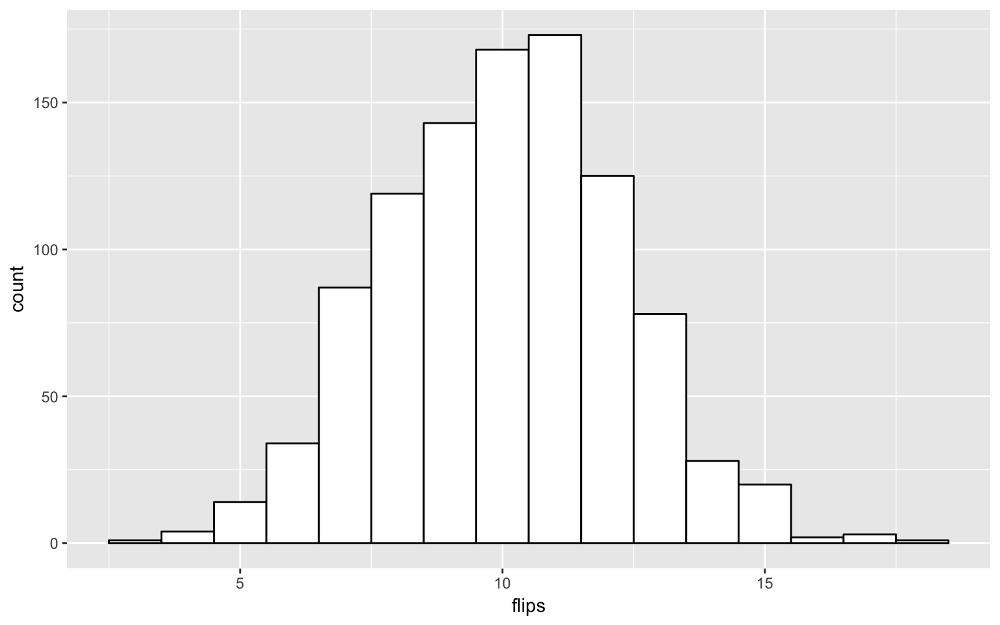
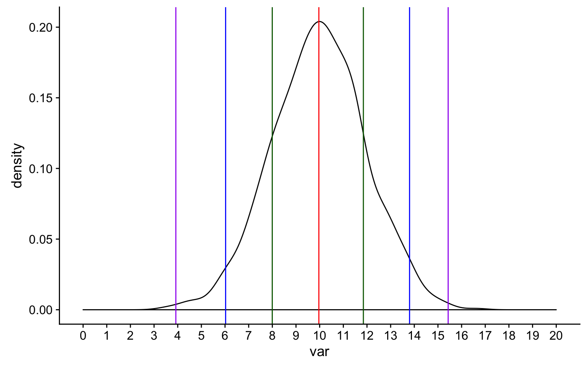
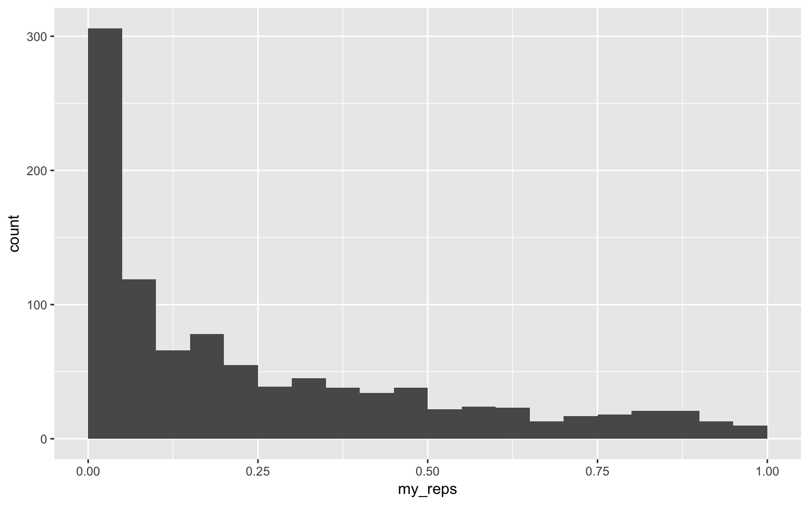
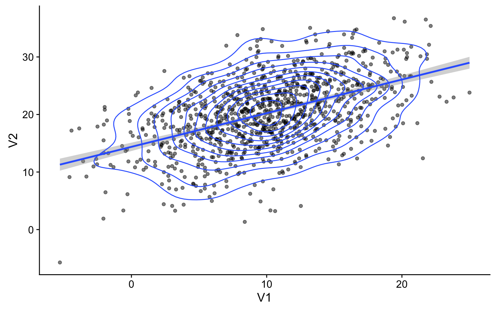
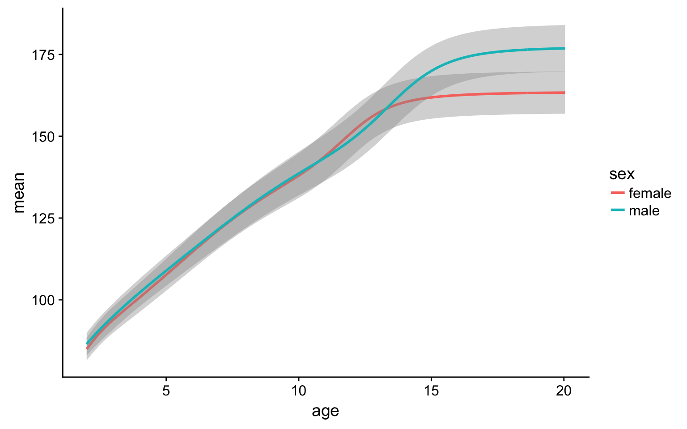
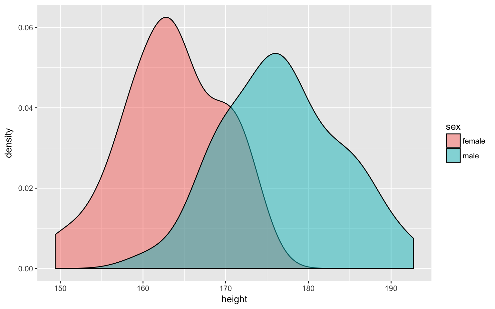
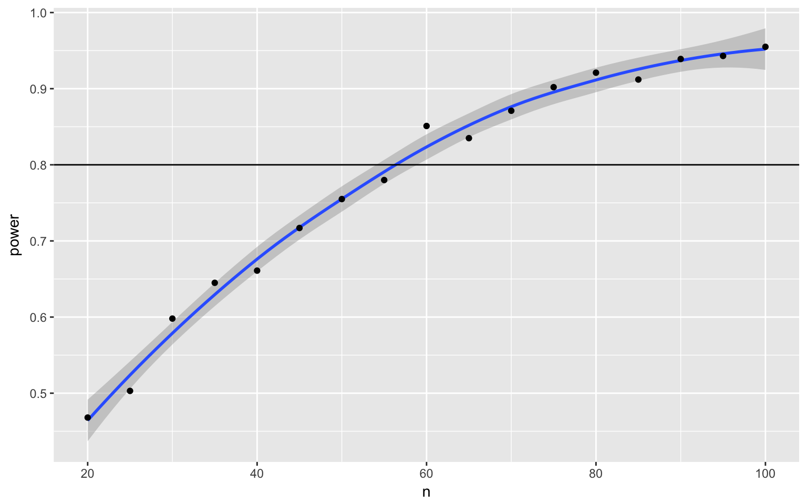
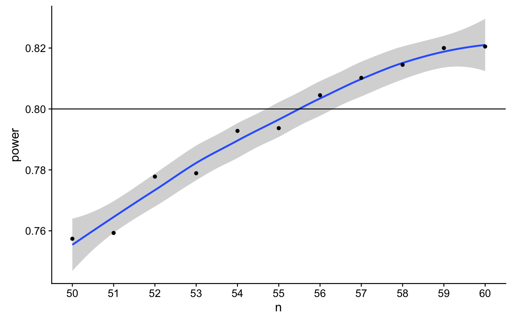
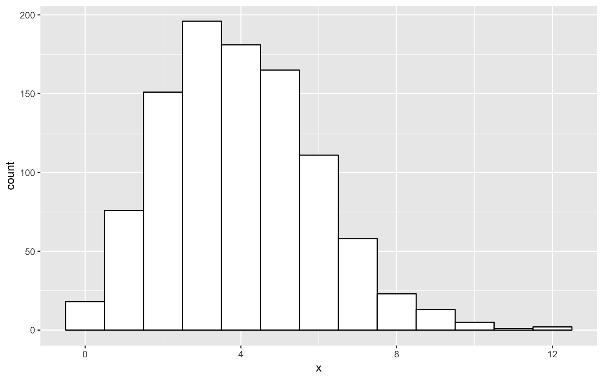
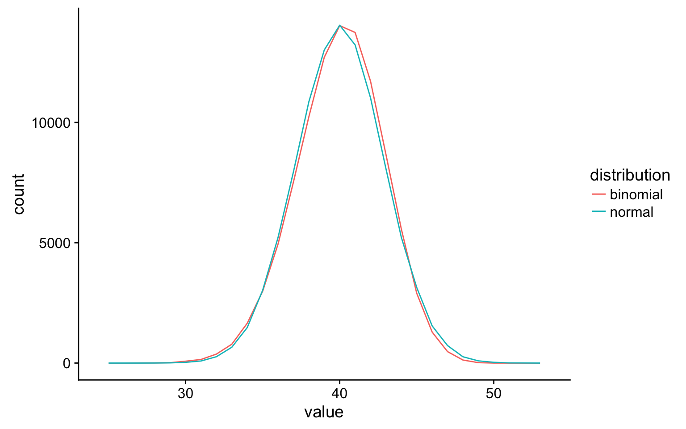

replicate and a sampling functionSimulating data is a very powerful way to test your understanding of statistical concepts. We are going to use simulations to learn the basics of probability.
# libraries needed for these examples
library(tidyverse)
library(MASS)The uniform distribution is the simplest distribution. All numbers in the range have an equal probability of being sampled.
runif(n, min=0, max=1)
Use runif() to sample from a continuous uniform distribution.
runif(10, min = 0, max = 1)## [1] 0.636795071 0.909557017 0.988769699 0.005642375 0.066600512
## [6] 0.492927476 0.881561945 0.859489427 0.396313843 0.771223827sample(x, size, replace = FALSE, prob = NULL)
Use sample() to sample from a discrete distribution.
Simulate a single roll of a 6-sided die.
sample(6, 1)## [1] 4Simulate 10 rolls of a 6-sided die. Set replace to TRUE so each roll is independent. See what happens if you set replace to FALSE.
sample(6, 10, replace = TRUE)## [1] 5 6 4 3 1 6 5 1 5 2You can also use sample to sample from a list of named outcomes.
pet_types <- c("cat", "dog", "ferret", "bird", "fish")
sample(pet_types, 10, replace = TRUE)## [1] "fish" "bird" "cat" "bird" "ferret" "fish" "fish"
## [8] "ferret" "dog" "fish"Ferrets are a much less common pet than cats and dogs, so our sample isn’t very realistic. You can set the probabilities of each item in the list with the prob argument.
pet_types <- c("cat", "dog", "ferret", "bird", "fish")
pet_prob <- c(0.3, 0.4, 0.1, 0.1, 0.1)
sample(pet_types, 10, replace = TRUE, prob = pet_prob)## [1] "bird" "ferret" "ferret" "cat" "dog" "dog" "cat"
## [8] "cat" "dog" "dog"The binomial distribution is useful for modeling binary data, where each observation can have one of two outcomes, like success/failure, yes/no or head/tails.
rbinom(n, size, prob)
The rbinom function will generate a random binomial distribution.
n = number of observationssize = number of trialsprob = probability of success on each trialCoin flips are a typical example of a binomial distribution, where we can assign head to 1 and tails to 0.
20 individual coin flips of a fair coin
rbinom(20, 1, 0.5)## [1] 0 1 0 1 1 0 0 1 1 1 0 0 0 1 1 0 1 0 0 020 individual coin flips of a baised (0.75) coin
rbinom(20, 1, 0.75)## [1] 1 1 0 0 0 0 0 0 1 1 0 1 1 1 1 1 1 1 1 1You can generate the total number of heads in 1 set of 20 coin flips by setting size to 20 and n to 1.
rbinom(1, 20, 0.75)## [1] 15You can generate more sets of 20 coin flips by increasing the n.
rbinom(10, 20, 0.5)## [1] 10 9 9 7 9 12 9 8 10 7You should always check your randomly generated data to check that it makes sense. For large samples, it’s easiest to do that graphically. A histogram is usually the best choice for plotting binomial data.
sim_flips <- tibble(
flips = rbinom(1000, 20, 0.5)
)
ggplot(sim_flips) +
geom_histogram(
aes(flips),
binwidth = 1,
fill = "white",
color = "black"
)
Run the simulation above several times, noting how the histogram changes. Try changing the values of n, size, and prob.
binom.test(x, n, p)
You can test a binomial distribution against a specific probability using the exact binomial test.
x = the number of successesn = the number of trialsp = hypothesised probability of successHere we can test a series of 10 coin flips from a fair coin and a biased coin against the hypothesised probability of 0.5 (even odds).
n <- 10
fair_coin <- rbinom(1, n, 0.5)
biased_coin <- rbinom(1, n, 0.6)
binom.test(fair_coin, n, p = 0.5)##
## Exact binomial test
##
## data: fair_coin and n
## number of successes = 4, number of trials = 10, p-value = 0.7539
## alternative hypothesis: true probability of success is not equal to 0.5
## 95 percent confidence interval:
## 0.1215523 0.7376219
## sample estimates:
## probability of success
## 0.4binom.test(biased_coin, n, p = 0.5)##
## Exact binomial test
##
## data: biased_coin and n
## number of successes = 5, number of trials = 10, p-value = 1
## alternative hypothesis: true probability of success is not equal to 0.5
## 95 percent confidence interval:
## 0.187086 0.812914
## sample estimates:
## probability of success
## 0.5Run the code above several times. How often do you conclude the fair coin is biased (false positives)? How often do you conclude the biased coin is fair (false negatives)?
The probability that a test concludes the fair coin is biased is called the false positive rate (or Type I Error Rate). The alpha is the false positive rate we accept for a test. This is traditionally set at 0.05, but there are good arguments for setting a different criterion in some circumstances.
The probability that a test concludes the biased coin is fair is called the false negative rate (of Type II Error Rate). The power of a test is 1 minus its false negative rate (i.e., the true positive rate). Power depends on how biased the coin is and how many samples we take.
To estimate these rates, we need to repeat the sampling above many times. A function is ideal for repeating the exact same procedure over and over. Set the arguments of the function to variables that you might want to change. Here, we will want to estimate power for:
n)bias)p, defaults to 0.5)sim_binom_test <- function(n, bias, p = 0.5) {
coin <- rbinom(1, n, bias)
btest <- binom.test(coin, n, p)
btest$p.value
}Once you’ve created your function, test it a few times, changing the values.
sim_binom_test(100, 0.6)## [1] 0.7643534Then you can use the replicate() function to run it many times and save all the output values. You can calculate the power of your analysis by checking the proportion of your simulated analyses that have a p-value less than your alpha (the probability of rejecting the null hypothesis when the null hypothesis is true).
my_reps <- replicate(10000, sim_binom_test(100, 0.6))
mean(my_reps < 0.05)## [1] 0.455rnorm(n, mean, sd)
We can simulate a normal distribution of size n if we know the mean and standard deviation (sd). A density plot is usually the best way to visualise this type of data if your n is large.
data <- tibble(
var = rnorm(1000, 10, 2)
)
ggplot(data, aes(var)) +
geom_density(fill = "white") +
geom_vline(xintercept = mean(data$var), color = "red") +
geom_vline(xintercept = quantile(data$var, .5 - (.6827/2)), color = "darkgreen") +
geom_vline(xintercept = quantile(data$var, .5 + (.6827/2)), color = "darkgreen") +
geom_vline(xintercept = quantile(data$var, .5 - (.9545/2)), color = "blue") +
geom_vline(xintercept = quantile(data$var, .5 + (.9545/2)), color = "blue") +
geom_vline(xintercept = quantile(data$var, .5 - (.9973/2)), color = "purple") +
geom_vline(xintercept = quantile(data$var, .5 + (.9973/2)), color = "purple") +
scale_x_continuous(
limits = c(0,20),
breaks = seq(0,20)
)
Run the simulation above several times, noting how the density plot changes. What do the vertical lines represent? Try changing the values of n, mean, and sd.
t.test(x, y, alternative, mu, paired)
Use a t-test to compare the mean of one distribution to a null hypothesis (one-sample t-test), compare the means of two samples (independent-samples t-test), or compare pairs of values (paired-samples t-test).
You can run a one-sample t-test comparing the mean of your data to mu. Here is a simulated distribution with a mean of 0.5 and an SD of 1, creating an effect size of 0.5 SD when tested against a mu of 0. Run the simulation a few time to see how often the t-test returns a significant p-value.
sim_norm <- rnorm(100, 0.5, 1)
t.test(sim_norm, mu = 0)##
## One Sample t-test
##
## data: sim_norm
## t = 4.5738, df = 99, p-value = 1.389e-05
## alternative hypothesis: true mean is not equal to 0
## 95 percent confidence interval:
## 0.2598802 0.6581410
## sample estimates:
## mean of x
## 0.4590106Run an independent-samples t-test by comparing two lists of values.
a <- rnorm(100, 0.5, 1)
b <- rnorm(100, 0.7, 1)
t_ind <- t.test(a, b, paired = FALSE)
t_ind##
## Welch Two Sample t-test
##
## data: a and b
## t = -1.9091, df = 197.81, p-value = 0.0577
## alternative hypothesis: true difference in means is not equal to 0
## 95 percent confidence interval:
## -0.534954208 0.008676087
## sample estimates:
## mean of x mean of y
## 0.5772213 0.8403604
The paired argument defaults to FALSE, but it’s good practice to always explicitly set it so you are never confused about what type of test you are performing.
We can use the names() function to find out the names of all the t.test parameters and use this to just get one type of data, like the estimates being compared.
names(t_ind)## [1] "statistic" "parameter" "p.value" "conf.int" "estimate"
## [6] "null.value" "alternative" "method" "data.name"t_ind$estimate## mean of x mean of y
## 0.5772213 0.8403604If you want to run the simulation many times and record information each time, first you need to turn your simulation into a function.
sim_t_ind <- function(n, m1, sd1, m2, sd2) {
v1 <- rnorm(n, m1, sd1)
v2 <- rnorm(n, m2, sd2)
t_ind <- t.test(v1, v2, paired = FALSE)
return(t_ind$p.value)
}
sim_t_ind(100, 0.5, 1, 0.7, 1)## [1] 0.1975417Now replicate the simulation 1000 times.
my_reps <- replicate(1000, sim_t_ind(100, 0.7, 1, 0.5, 1))
alpha <- 0.05
power <- mean(my_reps < alpha)
power## [1] 0.293Run the code above several times. How much does the power value fluctuate? How many replications do you need to run to get a reliable estimate of power? How does this number compare to an online power calculator?
You can plot the distribution of p-values.
ggplot() + geom_histogram(aes(my_reps), binwidth = 0.05, boundary = 0)
What do you think the distribution of p-values is when there is no effect (i.e., the means are identical)? Check this yourself.
Make sure the boundary argument is set to 0 for p-value histograms. See what happens with a null effect if boundary is not set.
You can test if two continuous variables are related to each other using the cor() function.
Below is a quick and dirty way to generate two correlated variables. x is drawn from a normal distribution, while y is the sum of x and another value drawn from a random normal distribution. We’ll learn later how to generate specific correlations in simulated data.
n <- 100 # number of random samples
x <- rnorm(n, 0, 1)
y <- x + rnorm(n, 0, 1)
cor(x, y)## [1] 0.7360241cor() defaults to Pearson’s correlations. Set the method argument to use Kendall or Spearman correlations.
cor(x, y, method = "spearman")## [1] 0.769841What if we want to sample from a population with specific relationships between variables? We can sample from a bivariate normal distribution using the MASS package,
n <- 1000 # number of random samples
rho <- 0.5 # population correlation betwen the two variables
mu <- c(10, 20) # the means of the samples
stdevs <- c(5, 6) # the SDs of the samples
# correlation matrix
cor_mat <- matrix(c( 1, rho,
rho, 1), 2)
sigma <- (stdevs %*% t(stdevs)) * cor_mat
bvn <- mvrnorm(n, mu, sigma) # sample from bivariate normal distribution
cor(bvn) # check correlation matrix## [,1] [,2]
## [1,] 1.0000000 0.4985597
## [2,] 0.4985597 1.0000000Plot your sampled variables to check everything worked like you expect. You need to convert the output of mvnorm into a tibble in order to use it in ggplot.
bvn %>%
as_tibble() %>%
ggplot(aes(V1, V2)) +
geom_point(alpha = 0.5) +
geom_smooth(method = "lm") +
geom_density2d()
n <- 100 # number of random samples
rho1_2 <- 0.8 # correlation betwen v1 and v2
rho1_3 <- 0.6 # correlation betwen v1 and v3
rho2_3 <- 0.2 # correlation betwen v2 and v3
mu <- c(10, 20, 30) # the means of the samples
stdevs <- c(5, 6, 7) # the SDs of the samples
# correlation matrix
cor_mat <- matrix(c( 1, rho1_2, rho1_3,
rho1_2, 1, rho2_3,
rho1_3, rho2_3, 1), 3)
sigma <- (stdevs %*% t(stdevs)) * cor_mat
bvn3 <- mvrnorm(n, mu, sigma)
cor(bvn3) # check correlation matrix## [,1] [,2] [,3]
## [1,] 1.0000000 0.7754865 0.7098973
## [2,] 0.7754865 1.0000000 0.2724342
## [3,] 0.7098973 0.2724342 1.0000000You can use the plotly library to make a 3D graph.
library(plotly)
bvn3 %>%
as_tibble() %>%
plot_ly(x = ~V1, y = ~V2, z = ~V3) %>%
add_markers()This example uses the Growth Chart Data Tables from the US CDC.
We have to do a little data wrangling first. Have a look at the data after you import it and relabel Sex to male and female instead of 1 and 2. Also convert Agemos (age in months) to years. Relabel the column 0 as mean and calculate a new column named sd as the difference between columns 1 and 0.
height_age <- read_csv("https://www.cdc.gov/growthcharts/data/zscore/zstatage.csv") %>%
filter(Sex %in% c(1,2)) %>%
mutate(
sex = recode(Sex, "1" = "male", "2" = "female"),
age = as.numeric(Agemos)/12,
sd = `1` - `0`
) %>%
dplyr::select(sex, age, mean = `0`, sd)
If you run the code above without putting dplyr:: before the select() function, you will get an error message. This is because the MASS package also has a function called select() and, since we loaded MASS after tidyverse, the MASS function is the default. When you loaded MASS, you should have seen a warning like “The following object is masked from ‘package:dplyr’: select”. You can use functions with the same name from different packages by specifying the package before the function name,separated by two colons.
Plot your new data frame to see how mean height changes with age for boys and girls.
ggplot(height_age, aes(age, mean, color = sex)) +
geom_smooth(aes(ymin = mean - sd, ymax = mean + sd), stat="identity")
Create new variables for the means and SDs for 20-year-old men and women.
height_sub <- height_age %>% filter(age == 20)
m_mean <- (height_sub %>% filter(sex == "male") %>% dplyr::select(mean))[[1]]
m_sd <- (height_sub %>% filter(sex == "male") %>% dplyr::select(sd))[[1]]
f_mean <- (height_sub %>% filter(sex == "female") %>% dplyr::select(mean))[[1]]
f_sd <- (height_sub %>% filter(sex == "female") %>% dplyr::select(sd))[[1]]
height_subSimulate 50 random male heights and 50 radom female heights using the rnorm() function and the means and SDs above. Plot the data.
sim_height <- tibble(
male = rnorm(50, m_mean, m_sd),
female = rnorm(50, f_mean, f_sd)
) %>%
gather("sex", "height", male:female)
ggplot(sim_height) +
geom_density(aes(height, fill = sex), alpha = 0.5)
Run the simulation above several times, noting how the density plot changes. Try changing the age you’re simulating.
Use the sim_t_ind(n, m1, sd1, m2, sd2) function we created above to generate one simulation with a sample size of 50 in each group using the means and SDs of male and female 14-year-olds.
height_sub <- height_age %>% filter(age == 14)
m_mean <- (height_sub %>% filter(sex == "male") %>% dplyr::select(mean))[[1]]
m_sd <- (height_sub %>% filter(sex == "male") %>% dplyr::select(sd))[[1]]
f_mean <- (height_sub %>% filter(sex == "female") %>% dplyr::select(mean))[[1]]
f_sd <- (height_sub %>% filter(sex == "female") %>% dplyr::select(sd))[[1]]
sim_t_ind(50, m_mean, m_sd, f_mean, f_sd)## [1] 0.01483162Now replicate this 10000 times using the replicate() function. This function will save the returned p-values in a list (my_reps). We can then check what proportion of those p-values are less than our alpha value. This is the power of our test.
my_reps <- replicate(10000, sim_t_ind(50, m_mean, m_sd, f_mean, f_sd))
alpha <- 0.05
power <- mean(my_reps < alpha)
power## [1] 0.6561This design has about 60% power to detect the sex difference in height (with a 2-tailed test). Modify the sim_t_ind function for a 1-tailed prediction.
You could just set alternative equal to “greater” in the function, but it might be better to add the alternative argument to your function (giving it the same default value as t.test) and change the value of alternative in the function to alternative.
sim_t_ind <- function(n, m1, sd1, m2, sd2, alternative = "two.sided") {
v1 <- rnorm(n, m1, sd1)
v2 <- rnorm(n, m2, sd2)
t_ind <- t.test(v1, v2, paired = FALSE, alternative = alternative)
return(t_ind$p.value)
}
my_reps <- replicate(10000, sim_t_ind(50, m_mean, m_sd, f_mean, f_sd, "greater"))
mean(my_reps < alpha)## [1] 0.7622What if we want to find out what sample size will give us 80% power? We can try trial and error. We know the number should be slightly larger than 50. But you can search more systematically by repeating your power calculation for a range of sample sizes.
This might seem like overkill for a t-test, where you can easily look up sample size calculators online, but it is a valuable skill to learn for when your analyses become more complicated.
Start with a relatively low number of replications and/or more spread-out samples to estimate where you should be looking more specifically. Then you can repeat with a narrower/denser range of sample sizes and more iterations.
sample_size <- seq(20, 100, by = 5)
power_list <- sapply(sample_size,
function(n) {
my_reps <- replicate(1000, sim_t_ind(n, m_mean, m_sd, f_mean, f_sd, "greater"))
mean(my_reps < 0.05)
}
)
power_table <- tibble(
n = sample_size,
power = power_list
)
ggplot(power_table, aes(n, power)) +
geom_smooth() +
geom_point() +
geom_hline(yintercept = 0.8)
Now we can narrow down our search to values around 55 (plus or minus 5) and increase the number of replications from 1000 to 10000.
sample_size <- seq(50, 60)
power_list <- sapply(sample_size,
function(n) {
my_reps <- replicate(10000, sim_t_ind(n, m_mean, m_sd, f_mean, f_sd, "greater"))
mean(my_reps < 0.05)
}
)
power_table <- tibble(
n = sample_size,
power = power_list
)
ggplot(power_table, aes(n, power)) +
geom_smooth() +
geom_point() +
geom_hline(yintercept = 0.8) +
scale_x_continuous(breaks = sample_size)
Generate a dataset with one normally distributed variable with a mean of 0 and SD of 1 (a <- rnorm(n, 0, 1) and another variable that is equal to the sum of a and another normally distributed variable with a mean of 0.5 and SD of 1 (b <- a + rnorm(n, 0.5, 1)). Run paired-samples t-tests comparing a and b for a sample size of 50
n <- 50
a <- rnorm(n, 0, 1)
b <- a + rnorm(n, 0.5, 1)
t.test(a, b, paired = TRUE)##
## Paired t-test
##
## data: a and b
## t = -1.6715, df = 49, p-value = 0.101
## alternative hypothesis: true difference in means is not equal to 0
## 95 percent confidence interval:
## -0.51895515 0.04766411
## sample estimates:
## mean of the differences
## -0.2356455Calculate power for a two-tailed t-test with an alpha of .05 for detecting a difference between two independent samples of 100 with an effect size of 0.2?
my_reps <- replicate(10000, sim_t_ind(100, 0, 1, 0.2, 1))
mean(my_reps < 0.05)## [1] 0.2884Modify the sim_t_ind function to handle different sample sizes. Use it to calculate the power of the following design:
30 observations from a normal distribution with a mean of 13 and an SD of 4.5
sim_t_ind <- function(n1, m1, sd1, n2, m2, sd2,
alternative = "two.sided") {
v1 <- rnorm(n1, m1, sd1)
v2 <- rnorm(n2, m2, sd2)
t_ind <- t.test(v1, v2,
alternative = alternative,
paired = FALSE)
return(t_ind$p.value)
}
my_reps <- replicate(10000, sim_t_ind(20, 10, 4, 30, 13, 4.5))
mean(my_reps < 0.05)## [1] 0.6752Calculate power for a two-tailed t-test with an alpha of .005 for detecting a sex difference in height in a sample of 10 male and 10 female 20-year-olds?
height_sub <- height_age %>% filter(age == 20)
m_mean <- (height_sub %>% filter(sex == "male") %>% dplyr::select(mean))[[1]]
m_sd <- (height_sub %>% filter(sex == "male") %>% dplyr::select(sd))[[1]]
f_mean <- (height_sub %>% filter(sex == "female") %>% dplyr::select(mean))[[1]]
f_sd <- (height_sub %>% filter(sex == "female") %>% dplyr::select(sd))[[1]]
my_reps <- replicate(10000, sim_t_ind(10, m_mean, m_sd, 10, f_mean, f_sd))
mean(my_reps < 0.005)## [1] 0.8594What is the poisson distribution? How do you sample from a poisson distribution?
The [poisson distribution(https://en.wikipedia.org/wiki/Poisson_distribution) is good for modeling the rate of something, like the number of texts you receive per day. Then you can test hypotheses like you receive more texts on weekends than weekdays. The poisson distributiongets more like a normal distribution when the rate gets higher, so it’s most useful for low-rate events.
lambda <- 4 # lambda sets the mean of the poisson distribution
tibble (
x = rpois(1000, lambda)
)%>%
ggplot(aes(x)) +
geom_histogram(fill="white", color="black", binwidth = 1)
Prove to yourself that the binomial distribution looks like the normal distribution when the number of trials is greater than 10.
You can calculate the equivalent mean for the normal distribution as the number of trials times the probability of success (mean <- trials * prob) and the equivalent SD as the square root of the mean times one minus probability of success (sd <- sqrt(mean * (1 - prob))).
n <- 100000 # use a large n to get good estimates of the distributions
trials <- 50
prob <- 0.8
mean <- trials * prob
sd <- sqrt(mean * (1 - prob))
tibble (
normal = rnorm(n, mean, sd),
binomial = rbinom(n, trials, prob)
) %>%
gather("distribution", "value", normal:binomial) %>%
ggplot(aes(value, color=distribution)) +
geom_freqpoly(binwidth = 1)